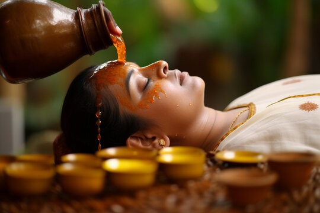
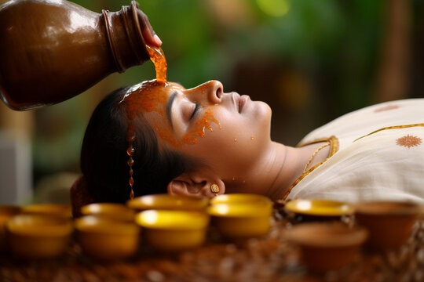

Heal Yourself With AYURVEDA
Authentic ayurvedic treatments for a holistic lifestyle
Rejuvanate mind,body and soul
Being an ancient Indian science of healing, Ayurveda is truly powerful to purify your body and remove toxins.
Ayurvedic treatment can also enhance your immunity and rejuvenate your body, mind and soul.
Experience wellness with the unique Ayurvedic rejuvenation treatment
AYURCONNECT AYURVEDIC TREATMENTS
Ayurconnect offers the best Ayurvedic treatment packages in Kerala.
Each ayurvedic package includes accommodation, a doctor’s consultation, and ayurvedic diet, yoga/ meditation classes, and therapies.
Choose the best Kerala Ayurveda packages for your needs in terms of Weight loss treatment , insomnia, Psoriasis, Rheumatoid arthritis, Diabetes, and Nervous disorders.
All you have to do to schedule an online consultation in contact or whatsapp.
ABOUT US
Ayurconnect - One of the best Ayurveda & Yoga retreat in Kerala, India. Known as a paradise of Ayurveda, Kerala has always been chosen by ayurveda treatment seekers.
No matter whether you need rejuvenation or cure, you can definitely find the best ayurvedic treatment in kerala.
 Login|Signup
Login|Signup
 
